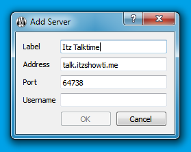

1. If you don't have Mumble, you can get the client from the official download page.
2. With the Mumble client installed, you can join our Mumble server automatically simply by clicking this link: mumble://talk.itzshowti.me
3. You can also add to your list of Mumble servers permanently:
